AR(N)AN / The Floating Urban Atlas
A landscape before a city.
Historical pre-polish gallery. Open the current R0-A2 environmental polish and eight matched comparison pairs.
R0-A removes the rejected architecture and builds a tropical ridge, valley, meadows and a natural cliff overlook. These are unretouched browser captures from the integrated portfolio.
Human visual review pending. Target average 4/5, no criterion below 3/5. No human score or approval has been assigned. R0-B architecture has not started.
The implemented landscape
01 / Full island aerial

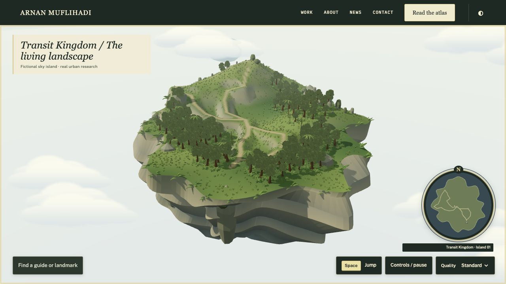
02 / Profile and underside

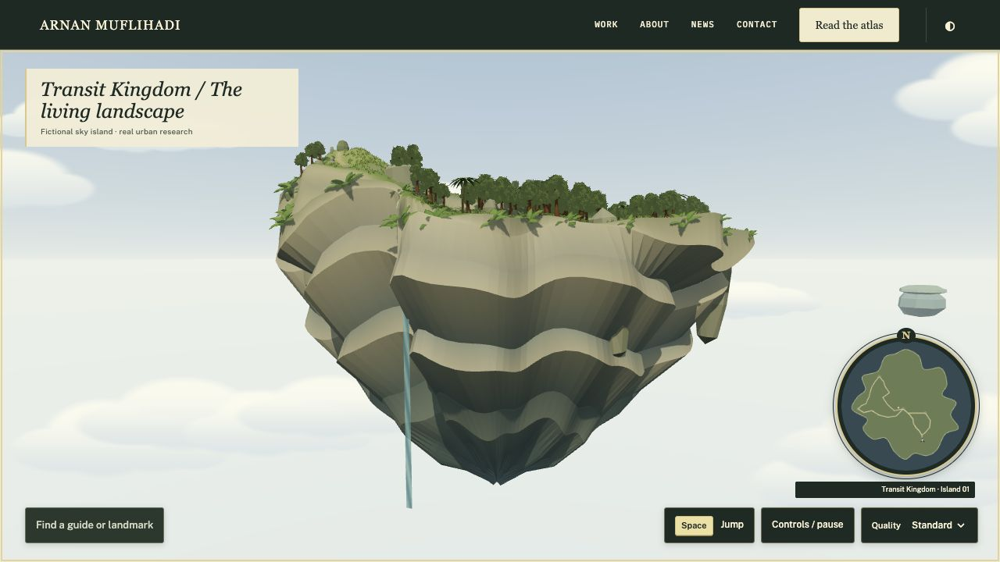
03 / Low-angle cliff

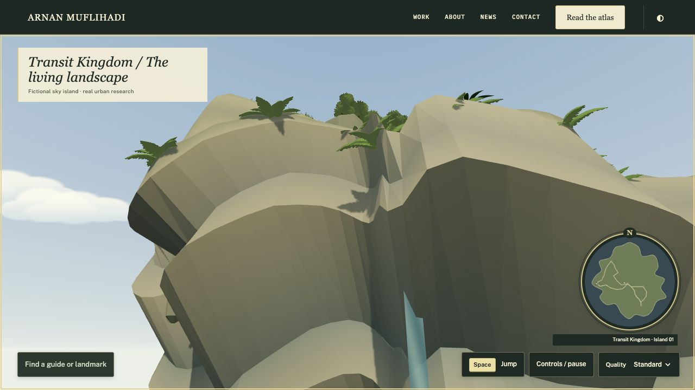
04 / Third-person spawn

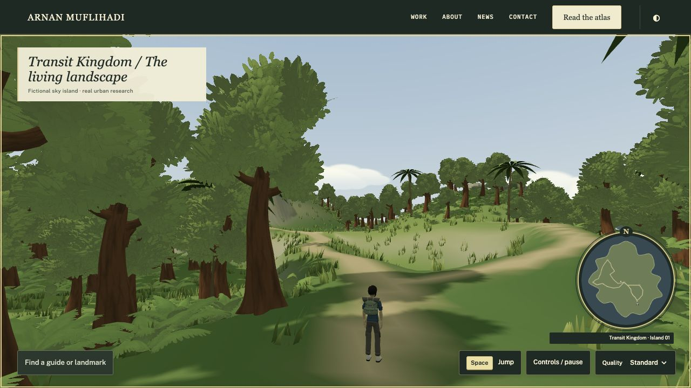
05 / Elevated trail

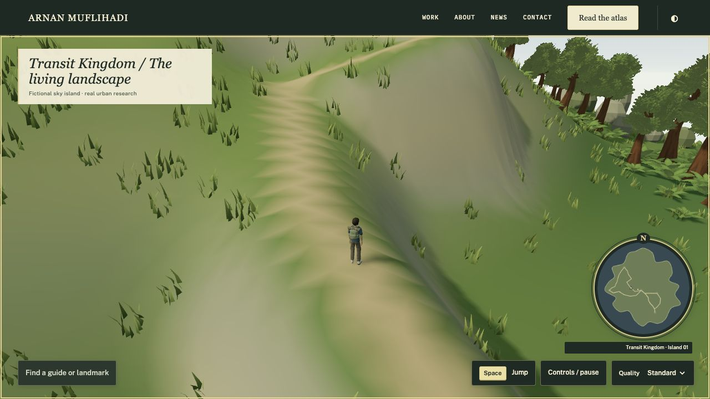
06 / Cloudbreak overlook

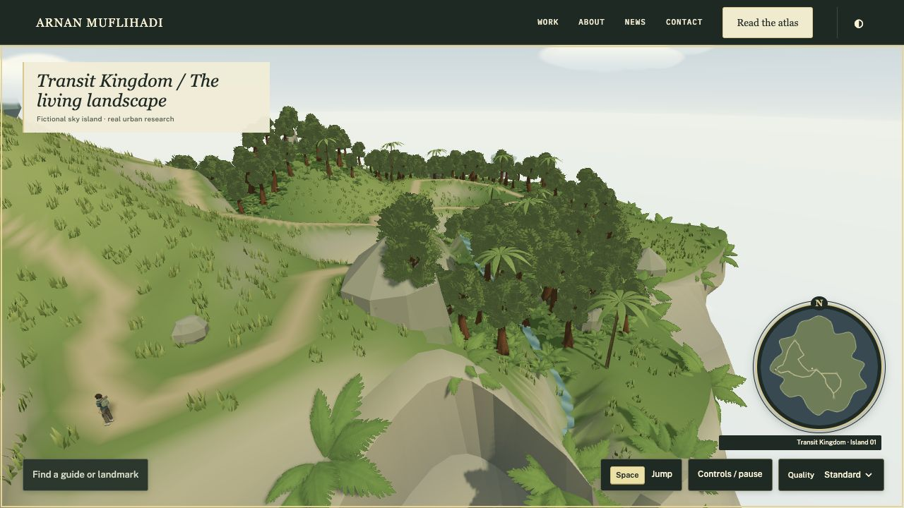
07 / Actual jump

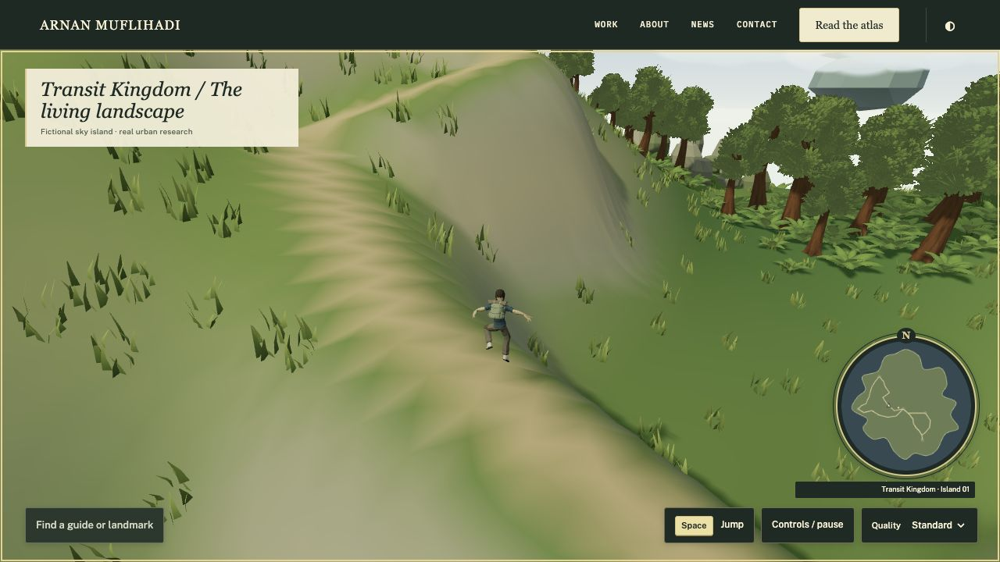
08 / Landing

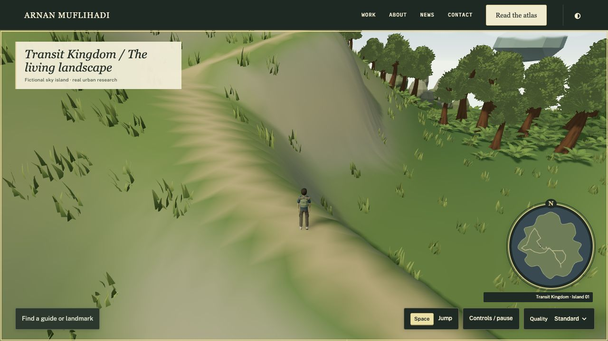
09 / Editorial portfolio

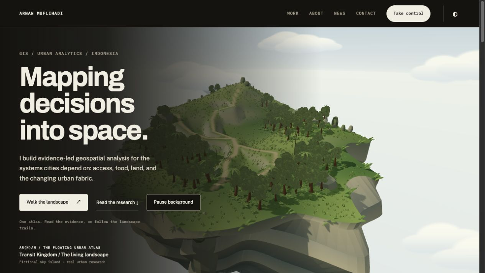
10 / Resumed adventure

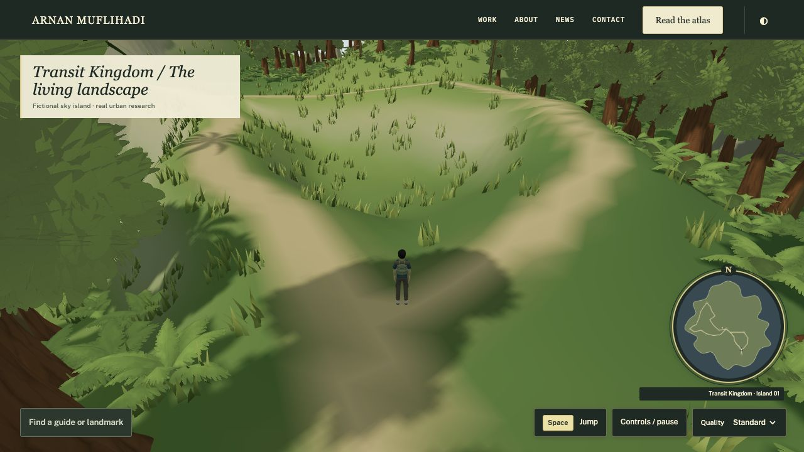
Comparable pre-correction view
Both views use camera [110,82,135], target [0,−3,0], FOV 43° and a 1280×720 viewport. The larger new terrain extends outside this matched framing; the full-island view above uses a wider composition. Lighting changes are part of the correction.
Before / Rejected R0

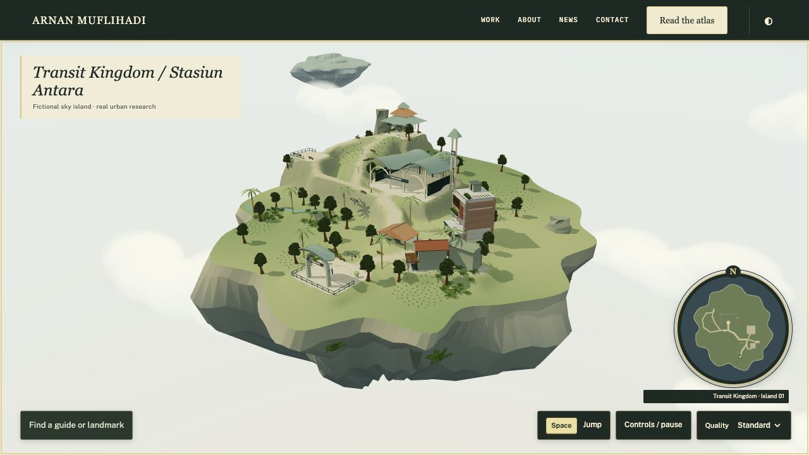
After / R0-A landscape

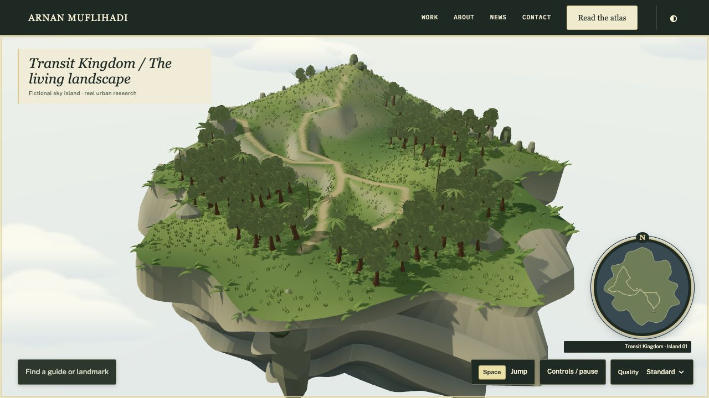
Technical evidence and limits
77/77 tests pass. The static audit retains 58 inherited findings with none added or resolved. Actual walking on this Mac/Chromium 156 measured 600 moving frames, 5.555 ms mean, 5.80 ms p95, 180.01 FPS, 58 draw calls and 1,291,255 submitted triangles at 1280×656, DPR 1, shadows on. These are local measurements, not a physical-phone or cross-device guarantee.
Four live environment textures have zero missing images. Two scenery GLBs total 824,100 bytes; the five active scenery/character/animation GLBs total 3,859,228 bytes. Original Quaternius CC0 sources and licenses remain unchanged. No reference code or assets were copied.
Owner review remains necessary for repeated tree crowns, simplified grass, broad rock strata, smooth slopes, cloud shapes, the waterfall ribbon and distant silhouettes. Cold-network loading and physical phones are not benchmarked. No buildings, flight, additional complete realms, new quests or combat are included.
Test log · Moving-frame measurements · Actual loaded assets · Terrain, routes and cleanup · Inventory and hashes · Static audit comparison · Asset manifest